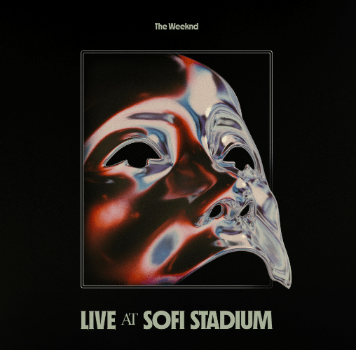

The Weekend
Tras el nombre de The Weeknd , se encuentra Abel Makkonen Tesfaye (Ontario, 1990) hijo único de Makkonen y Samra Tesfaye.
De ascendencia etíope, Abel tuvo una infancia complicada: su padre abandonó la familia, su madre fue encadenando múltiples trabajos para sacar a la familia, que compaginó con estudios en la escuela nocturna, mientras era cuidado por su abuela y gracias a ella, habla de manera fluida el amhárico. Comenzó a consumir drogas a los 11 años, de fumar marihuana a consumo de Ketamina o MDMA, algún robo en supermercado y dejó de estudiar “un fin de semana” con un amigo. Y de esa deserción viene su nombre artístico, que fue modificado para no entrar en conflicto con la banda canadiense The weekend. Aunque inicialmente comenzó a trabajar con Jeremy Rose, relación que no se llega a consolidar por diferencias entre ambos, The Weeknd comienza a hacer ruido con un tres sencillos que subió a Youtube y con la ayuda indirecta, se le incluyó en un blog de canciones del rapero Drake. Lanzaría el mixtape House of Balloons en 2011, que le llevaría de gira por diferentes festivales en Canadá. Ese año lanzaría dos mixtape más: Thursday y Echoes of silence , lo que le dio a conocer popularmente como Balloons trilogy. Tras esto participaría en una gira que le llevaría a participar en festivales por todo el mundo como Coachella (Estados Unidos), Primavera Sound (España) o Wireless Festival (Reino Unido), además de tocar en ciudades como New York, París o Bruselas. A finales de 2012, junto a Republic Records, forma su marca XO y lanza el recopilatorio Trilogy, y se reconcilia con Rose acreditándole en los temas de House of Balloons. El álbum fue platino en Usa y doble platino en Canadá.

 |
 |
 |
 |